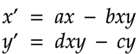

WebXR Studio
Prepared for York University course DIGM5520, 2021-12-04.
Contents
Overview
The WebXR Studio project began as an experiment in building a platform to support "telematic (remote) immersive experiences" using browser-based WebXR technology, and "to rethink how immersive worlds can be developed & shared through remote development and education," as outlined in the original project brief.
The work was conducted over the course on the fall 2021 semester by a group of undergraduate and graduate students at York University, working remotely over Zoom, Discord, and GitHub, and supported by professor Graham Wakefield and research assistants Michael Palumbo and Nick Fox-Gieg.
Currently at a proof of concept stage, this project consists of a collection of separate "worlds" built on a common infrastructure of client and server JavaScript code, demonstrating distinct aspects of this world-building proposition:
- The "Multiplayer" world demonstrates collaborative editing of a shared 3D scene, and non-verbal communication between users via visual "emote" signifiers.
- The "Reflect" world demonstrates dynamic simulation of agents in the space, and "viral" influence of users spreading to influence those agents.
- The "Holonic Chorus" world demonstrates reactivity to external data streams, and algorithmic synthesis of generative sound and three-dimensional forms.
Related Works
Approaching VR as an experimental medium, we looked at works that go beyond a static representation of the physical world and dive into the relationships that can form between the virtual and the physical.
Osmose
A significant experimental artist working with VR who engages with the immersiveness of the medium is Char Davies. Davies’ work Osmose that dates back to 1995, avoids solid objects and treats the whole composition of the VR experience as a fluid landscape of forces between time, space, and people [Osmose]. Char Davies in Osmose and the teams that worked on both the conceptual and the technical aspects of the WebXR Studio Project explore the growing and reconfiguring of relationships in immersive experiences. Osmose repurposes the breathing of participants for the exploration of the virtual world, and the WebXR Studio Project rethinks the interactivity of multiple participants that share a virtual world telematically.
We-Live-In-An-Ocean-of-Air
A more recent VR artwork that shares Davies and our view on the potential of the VR medium is the work by Marshmallow Laser Feast titled We Live in an Ocean of Air [phi.ca]. The focus of We Live in an Ocean of Air is to visualize the invisible forces like air that exist in and influence the relationships between all living beings in the natural world. This work suggests that the VR medium allows us to tap into the hidden layers of the world and experience it in its complexity. In the WebXR Studio project, we created an environment that embodies invisible forces and conceptualizes them through the experiences lived within each of our virtual worlds.Technical Components
The entire project is built on top of the three.js library, which provides convenient scene graph management for working with GPU-accelerated WebGL rendering in the browser, and WebXR, a relatively new browser API allowing interactions between JavaScript code and head-mounted displays and controllers used for virtual, mixed, and extended reality experiences.
Replication
Multi-user interaction occurs in one of an arbitrary number of "rooms", each one identified by a string key. Users who have connected to the same room are able to see and hear one another, and collaboratively edit a shared 3D scene that persists within that room, independent of all others.
At present, we use one "room" per HTML entry point to the application (so each "world" discussed below has its own URL that always directs users into the same room). But this could be exposed to visitors to allow them to spin up semi-private instances of a given world, behind a room key known only to them and those they invite to join them.
The application uses a client-server architecture over WebSocket connections to synchronize information about users in the shared environment of a given room, and the editable geometry of that shared environment. These two channels of information use different replication strategies:
-
User data like avatar position and pose are transmitted eagerly from client to server 30 times per second, and the server in turn broadcasts the set of last known poses to all clients in the room at a similar rate. These poses are then interpolated for smoother animated display.
This data is one-way and ephemeral. A client may report changes only to their own user data, and they are considered authoritative over it. Only the latest snapshot of the data is retained in memory, and is cleared when a user disconnects.
-
Shared scene data like the geometry, materials, and transformations of 3D objects in the world, are maintained in a syncrhonized document through the use of the Automerge library.
This handles merging concurrent changes made to the scene by multiple users, and resolving conflicts so that all users eventually agree on the same state of the shared 3D scene. It also retains a full history of the changes made, so that the scene can be restored to previous versions or the edit sequence re-played.
A Node.js server is used as the central relay, as well as to host the user-facing web page content via the express library.
WebSocket Communication Protocol
Because WebSockets are built on top of TCP, our communication is reliable and in-order, so we don't need to manually handle dropped or out-of-order messages. Interruptions in communication can still happen, but it's safe to treat such cases as a disconnection, and allow the user to re-connect from scratch, rather than trying to recover any state.
All WebSocket communication between the client and server occurs via "Message" objects in JSON text format, with the following structure:
{
cmd: "command", // A short string indicating the message type.
val: {
// A JSON object with properties defining the mesage contents / payload.
}
}
This communication structure is defined in a shared networkMessages.js file used by both client and server code, for consistency.
The initial connection flow works like this (see the client side in connect.mjs, and the server side in server.js)
-
The client initiates a connection to the server, by appending the desired room key onto the end of the server's domain and using this as the WebSocket request URL.
-
Upon receiving a new connection request, the server checks for an existing "room" object corresponding to the path component of the request URL (trailing or doubled slashes in the room key are ignored). If no existing room is found, it creates one, as an object dontaining:
- The room's key ("name")
- A map of all clients in the room
- A default scene document (see below), and a flag indicating whether there are local changes to syncrhonize to the clients (initially false)
-
Next, the server assigns the newly-connected client a unique ID (using the uuid library) in RFC4122 version 4 format (though we strip out the hyphens for compatibility as an Automerge actor ID). It then adds to the room's client map an object representing this client, containing:
- The WebSocket connection to use for communicating with this client
- A reference to the room object this client occupies
- A shared data structure, representing data to be synchronized to other clients in the room, further
divided
into two parts:
-
A "volatile" component, containing information that changes rapidly and should be syncrhonized eagerly, such as head and controller poses (initially assumed to be at the origin by default). The client's unique ID is also stored here, even though it does not change, for the convenience of being able to send an array of all the "volatile" structures and have them already pre-labelled with the client to whom they belong.
-
A "user" component, containing long-lived user information, such as their display name and avatar customization. These are relayed only when a new user joins, though in future they could also be updated when a user changes their display properties. (The current interface does not give users a means to do this, but this is only a UI restriction)
-
The server replies back to the client with a "handshake" message, containing the client's assigned unique ID, the server's own unique ID, and an array of the "shared" data objects for all other clients connected to the same room.
-
As soon as the connection is established, the client sends a "user" message, containing the contents of its shared user data structure as described above.
-
Upon receiving the "handshake" message, the client stores its unique ID and the server's, and uses these to set up its synchronized Automerge document (see below). It also generates "replicas" or local copies of each remote client's avatars.
-
From then on, 30 times per second, the client sends the contents of its "volatile" shared data structure to the serve as part of a "pose" message. The server receives this data and uses it to overwrite the corresponding volatile portion of its data structure for the user.
Similarly, 30 times per second, the server iterates through all of its rooms, and broadcasts an array of all volatile data structures for all users in each room to all of those users.
-
When the server receives a "user" message, it repeats it to all other clients in that room, along with the unique ID of the client who sent it so they know to which replica the change should be applied.
-
When the server detects that a client has disconnected, it sends an "exit" message to all clients in that room, containing the disconnected client's ID, so that they can delete the corresponding replica.
The networking code here is deliberately agnostic about the contents of the "volatile" and "user" data structures - simply copying them verbatim as opaque containers. This makes it easy for new prototypes and artworks to add new synchronized data into the protocol, without depending on changes to the networking infrastructure. Different experiences using divergent data streams can co-exist in different rooms running on the same shared server. An example of this in action are the "emotes" used in the multiplayer demo, discussed below, where information about a user's current emoting state is injected into the volatile structure to replicate to other users.
"Shared Scene" and Automerge Integration
When a new room is created, the server creates a blank Automerge document with its unique ID, and tracks a synchronization state for that document for each user who connects to the room. As with the volatile and user data structures, this document is then treated as opaque: the server has no opinions about its contents.
When a new user connects, immediately following the initial "handshake" message, the server generates an Automerge SyncMessage to send to that user, as a message with the "sync" command. Both client and server, upon receiving a "sync" message, apply its updates to their local copy of the shared document, and immediately try to generate a reply to send back as a "sync" message of their own. This conversation continues until both ends are up-to-date with one another and agree on the shared document contents (at which point Automerge will generate a null SyncMessage, signifying that there is nothing new to discuss).
This foundation of document and conversation state management is handled by the "Merger" class in merge.js, which provides a wrapper around the common Automerge document transactions used on both client and server:
-
merger = new Merger(sourceDocument, actorID) - creates a new Automerge document based on the provided source object (or initializes a blank document if this is omitted - that's what is used in the current version), using the provided actor ID string to identify the local author for change tracking. If this actor ID is omitted, Automerge will automatically generate one, but in our case we use the client's unique ID assigned by the server so that our document change tracking matches our IDs used for room membership.
-
merger.addClient(remoteActorID) - initializes conversation-tracking with another actor contributing to the document. The client calls this with the server's unique ID to track its synchronization state relative to the server. The server calls this with the unique client ID each time a client joins a room, to manage the syncrhonizaton states of each client relative to its local document version.
-
merger.applyChange(commitMessage, doc => { /* change function */}) - applies a change to the local copy of the document, with an associated message describing the change. The client calls this to process changes made by the local user to the shared scene. The shared document is only ever modified in the body of this change function - outside of this, it is treated as immutable.
-
merger.makeSyncMessage(receiverID) - attempts to create and return an Automerge SyncMessage for the next stage of conversation with the actor identified by the "receiverID" string. If we're already synchronized with that recipient, this function returns null.
-
merger.handleSyncMessage(syncMesage, senderID) - accepts a string representation of an Automerge SyncMessage received over the network from the specified actor, and applies it to the local document. It returns an AutoMerge Patch data structure describing the full set of changes that this message has made to the document, which we can parse to update our front end.
-
merger.getDocument() - retrieves the current state of the shared Automerge document, which should be treated as read-only.
On the server side, when a SyncMessage is received from the client, we mark the room as potentially in need of syncrhonizaton. On our next 30-times-per-second loop sharing volatile information with all clients, we also try to generate a SyncMessage for each one, and send it if it is non-null (ie. if there's a change on the server that the remote client does not yet know about).
On the client side, we create an abstraction over this basic document-synchronization, tailored to the needs of synchronizing a three.js scene, specifically. This is provided by the "SharedScene" class in sharedScene.mjs. This class maintains collections of THREE.Geometry, Material, and Object3D objects used in the local copy of the scene, and associates with each one a unique ID matching them to their corresponding entry in the Automerge document. This ID is stored in the objects' "userData" object as a "mergeID" field. This allows code that interfaces with the shared scene to work with regular three.js object references as they would for conventional/non-shared 3D content, rather than working via a specialized synchronization handle or other abstraction. It also maintains maps of these mergeIDs back to their corresponding objects, so that they can be fetched and modified in response to remote changes.
Code that modifies the shared scene can create new geometries, materials, and meshes as three.js code normally does. To publish a new mesh, it just needs to call shared.registerMesh(mesh), and the SharedScene class handles making the necessary changes to the Automerge document and marking the object with its assigned unique ID. It automatically handles registering the mesh's geometry and materials too, though this can also be done manually with shared.registerGeometry() and .registerMaterial() respectively.
Similarly, when changing an object's transformation or parenting, it suffices to call shared.updateTransformation(obj) or shared.placeInParent(obj, parentObjectOrNull) for the SharedScene to make the corresponding document updates.
The SharedScene class does not perform any de-duplication if two pieces of code (local or remote) attempt to create equivalent geometry/material assets. But it does allow code to search its internal maps using eg. shared.sceneGeometry.getByName(geoName), to check for and re-use an already-registered shared asset rather than constructing a new one. It also does not currently handle reference counting or deletion of geometry and mesh objects that are no longer in use — this is an area for future improvement.
Upon connection, the client constructs a new shared scene, which internally creates a THREE.Scene root object (initially with no unique ID assigned) to add to the current world, and relays any sync messages received from the server through it by calling shared.handleSyncMessage(syncMessage, serverID).
Once the initial exchange of SyncMessages with the server reaches its end (merger.makeSyncMessage(serverID) returns null), then we know we're up to date with the present state of the shared scene as stored on the server. At this point, the SharedScene class examines the document to check whether it's been initialized. If not, it takes responsibility for initializing it by creating three Automerge tables:
-
doc.geometries - contains a row for each THREE.BufferGeometry used by objects in the shared scene, with columns for the geometry's name, position attributes, and index buffer. (This bears expanding to include normal and texture coordinate attributes).
-
doc.materials - contains a row for each THREE.Material used by objects in the shared scene, with columsn for the material's name and RGB color triplet. (Materials are currently assumed to always be MeshLambertMaterial type, but this could be expanded to include more general materials)
-
doc.objects - contains a row for the scene root object, and a row for each THREE.Object3D object in the shared scene, with columns for their name, parent ID, position, rotation quaternion, scale, and (for mesh objects) their geometry and material IDs
It then proceeds to add a "root" entry into the objects table, with nulls for all elements but its name, setting it apart from any objects to be added later. It takes the unique key assigned to this row when adding it to the table and applies it to the scene root object, so that objects referencing
Each time a SyncMessage is received from the server and applied to the local copy of the document, we parse the resulting Automerge Patch object for...
-
New rows in the geometries table - which we instantiate as new BufferGeometry instances with that row's unique key as their mergeID.
-
New rows in the materials table - which we instantiate as new MeshLambertMaterial instances with that row's unique key as their mergeID.
-
Changes to the objects table - which could include...
-
Empty changes, corresponding to a deleted object which we remove from our scene graph.
-
Changes to rows whose key does not exist in our sceneObjects map, which correspond to new objects to add to the scene. If the object has a null position, we know it must be the scene root, and assign this row's key to our scene root object's mergeID. Otherwise, we assume it to be a mesh, and instantiate a THREE.Mesh with the data stored in the row.
-
Changes to rows whose key does exist in our sceneObjects map, which correspond to modified objects. We parse the change for modifications to apply to the object's position, quaternion, scale, or parent.
-
Changes are processed in this order, so that by the time we encounter a mesh that might reference the ID of a geometry or material, they have already been added to our maps. Parenting is handled last, to ensure we have the parent in our map before we try to add children to it.
This processing of changes is the most complex aspect of the solution, and it requires further expansion to cover the full generality of content that could be authored in a three.js scene. But it offers a major advantage over destroying the scene and re-building it from scratch by deserializing JSON as we'd considered earlier in the project (beyond the performance gains from not doing that): it means that other code can hold references to objects in the shared scene from frame to frame and use them like any other three.js object, without risk that those old references will get invalidated and need to be refreshed following a remote update.
The SharedScene class also exposes onSceneObjectAdded/Removed callbacks so that outside code can get notifications when either local or remote changes have created or destroyed objects in the scene.
Inside the application's animation loop, once each frame, the SharedScene is asked if it has any new local changes to share with the server (via shared.tryGenerateSyncMessage()), and if so, a message is sent. This limits the amount of traffic and processing required in the event that many scripts make changes in rapid succession, such as in response to multiple mouse events in a single frame. This structure is easy to throttle further should performace problems arise in future.
UI / HUD
The UI / HUD (Heads-Up Display) was built with accessbility and ease to use in mind. The buttons on the HUD panels were made to be big with bright colours so to indicate clearly what is being selected. An emoji system was introduced to give more alternatives to the player to express themselves in a way that can be easily understood and seen by others in the world. Then finally a print function was added that can print text in the wourld as a way to help debug the VR version with ease.
HUD Panels
The panels componet of the project uses the same in world 3D presence represented by 3D panels that can be interacted either by mouse click, or in VR by using the controller. This was achieved by using a raycast object that can be casted either from the mouse position, in case the client is using keyboard and mouse, or from the controller position, in case the client is using VR.
To build a compatible UI for VR and non-VR platforms, we tried CanvasUI and Three Mesh UI .
The Canvas UI was developed by Nik Lever. It is used to create user interface (UI) implementations in three.js for VR platforms [Lever, 2020]. The panel creates a plane object by default, and it allows you to configure the settings such as the size, font, etc. It seemed like it has a straightforward implementation; however, the default panel creating does not allow you to interact with the panel if you do not connect to the VR platform. This problem can be solved through additional code; however, we chose to use the latter option, which is the Three Mesh UI library.
The Three Mesh UI was developed by Felix Mariotto. Likewise the previous library, this library used to create user interfaces (UI) for VR platforms; however, since the default panel is a 3D object in the Three.js platform, this allows the created objects to be used in non-VR platforms [Mariotto, 2020]. This library does not have any dependency other than Three.js, making it easier to implement in that platform. It uses a parent-child hierarchy for building the panel and its components. Ex: First, the container needs to be created (Block function from ThreeMeshUI class), which has the parent-like properties, and then for other components depending on the context such as text, image, or keyboard, we need to use the ThreeMeshUI class. After initializing the text or other components, it needs to be added to the container. This process is similar to how Three.js displays objects in the scene. This library provided various examples and features, and it has a more extensive user base than the previous library.
The primary challenge we had, in the beginning, was not able to find a stable content delivery network (CDN) server. The Three Mesh UI library is available on different servers; however, the server we are using for all the other libraries in this project was not working well with this UI library. We still get warnings on using two different servers indicating that “Multiple instances of three.js being imported.” Even though this warning does not affect the function of the world in any way, we might need to find a better implementation. The future of the UI part is to incorporate UI into the other worlds, add accessibility features, and have a more efficient design for usability purposes.
Emojis
The emoji system was built to give the player more ways to express how they feel while navigating in the world. This was achieved by spawning in 3D emojis that would animate on top of the player to signify their current emotion towards the world at that moment.
The first step into spawning the emoji is to get a parent component as soon as the application is launched, the parent component serves as an anchor point where the emoji will always follow. Fot this parent component we chose to use the body representation of the player in the application world, that way everyone in the world will always know who used the emoji.
The next step would come when the player decided to emote. As soon as they trigger the button a method is called where we get a time stamp of the time when the method was called, this is meant to be used as a way for the program to know when it is suitable to delete the emoji, the current time is 5 seconds after it has been triggered.
Once this is done we then set the position of the emoji and also set the parent to the body object. Then to make sure the code is not expensive to run we call another method that actually spawns the emoji. This method does one of two functions, it either loads the emoji from a file path, or if that emoji has been previously used it recycles the emoji from a cached model.
Print in VR
The print in VR method was done using some of the basic principles of the emoji method. It gets a parent object that we can then parent the 3D text to it so it can anchor itself to that object in the world. Every string sent to the print method is added to an array, this array has a capacity of ten elements, if an 11th element is added the fisrt element in that array is then deleted and all the other elements shifts one position. The capacity of ten elements was chosen so it can be easy for the user to read the messages coming through without being overwhelmed by many messages at once.
Voice Chat
An in-app voice chat feature was added to the project for a seamless collaborative experience. A call button on the HUD is used to enable the audio chat. When pressed a separate audio channel is created according to the HTML entry point, only users that are present in the same “world” can communicate with each other. The audio-chat feature uses webRTC an open-source communication protocol used to stream audio and video directly from browser to browser (peer-to-peer).
Evaluation of available techniques and technologies:
WebRTC: Peer-to-Peer: WebRTC is the most popular open-source method of establishing audio and video connections. WebRTC is real-time and does not require the user to install plugins or third-party software the features are built into the browser itself. Connections are established from the client browser to another client browser using a server to relay connection information only, no data is streamed through the server. This system is only designed to connect peer-to-peer (two users) additional features need to be created to establish connections between multiple users.
Socket.IO and Node.JS: Socket.IO and Node.js can be used to record and send audio data. When audio is detected the client-side records the snippet of audio, converts it to a suitable format (base64String) and transfers the data over a server. There is significant latency in this implementation, the file has to be stored, converted, transferred and then re-converted into audio.
PeerJS: PeerJS is a javascript wrapper for webRTC, it simplifies the information exchanges required to establish the communication. My implementation of PeerJS was not successful due to certain browsers being unable to load a source file. This is a known issue and is documented on the PeerJS’s GitHub with tickets still open link. The PeerJs GitHub does offer a fix by changing an unpkg.com link, successful connections are rare and inconsistent.
Implementation: WebRTC, Mesh architecture
Description of WebRtc peer-to-peer
The following pseudo code describes briefly how a simple peer-to-peer connection is established using webRTC and a web socket server. MDN Web Docs and webrtc.org have been excellent resources for understanding each component of the protocol. To establish a connection between peers a pattern of negotiation has to occur, this description of peer-to-peer uses a signalling server and only two clients.
{
Step 1: A client (Peer A) enters a room
1. A new room is created on the server (Room) based on the HTML entry point title
Step 2: Another client (Peer B) enters the room
1. Room emits a message letting inhabitants know a new user has joined “room_joined”
Step 3: Peer A receives “room_joined”
1. Peer A emits “Start_Call” to the server
2. Room receives “Start_Call” and emits “Start_Call” to all inhabitants with
the emitter’s (Peer A) socket ID
Step 4: Peer B receives “Start_Call” and the emitter’s ID (Peer A)
Step 4A:
1. Checks if a connection is already made with this Peer
2. Creates a new object to represent the connection between (itself and Peer A)
“RTCPeerConnection”
Step 4B:
1. Peer B emits to server “Webrtc_ice_candidate” and ICECandidate information
for Peer A
2. Room emits to Peer A “Webrtc_ice_canditate” and the emitter’s (Peer B)
socket ID
Step 4C:
1. Peer B creates an offer using the “RTCPeerConnection” object called
“SessionDescription”
2. Peer B emits “webrtc_offer” and the “SessionDescription” object to Room
for Peer A
3. Room emits “webrtc_offer” and the “SessionDescription” object to Peer A
along with the emitter's (Peer B) Socket ID
Step 5: Peer A receives “Webrtc_ice_canditate” and appends the candidate
information to its own “RTCPeerConnection” object
Step 6: Peer A receives “webrtc_offer”
Step 6A:
Checks if a connection is already made
Creates a new object to represent the connection between (itself and Peer B)
“RTCPeerConnection”
Step 6B:
1. Peer A emits to server “Webrtc_ice_candidate” and ICECandidate information
for Peer B
2. Room emits to Peer B “Webrtc_ice_canditate” and the emitter’s (Peer B)
socket ID
3. Peer B receives “Webrtc_ice_canditate” and appends the candidate information
to its own “RTCPeerConnection” object
Step 6C:
1. Peer A creates a remote Description of Peer B
2. Peer A creates an answer using the “RTCPeerConnection” object called
“SessionDescription”
3. Peer A emits “Webrtc_answer” and the “SessionDescription” to Room for Peer B
4. Room emits “Webrtc_answer” and the “SessionDescription” object to Peer B
along with the emitters Socket ID
Step 7: Peer B Receives “Webrtc_ answer and creates a remote Description of Peer A
Step 8: Call between Peer A and B starts
// MDN reference https://developer.mozilla.org/en-US/docs/Web/API/WebRTC_API/Connectivity
}
Helpful Terms:
Signalling server: A signalling server’s purpose is to facilitate the information exchange from browser to browser to establish the connection. This project uses Socket.IO though any web socket server can be used, the server is created using Node.js and hosted on Heroku.
Interactive Connectivity Establishment (ICE): The ice protocol allows web browsers to connect with peers by bypassing firewalls that would usually prevent this from happening, it uses servers (STUN or TURN) to relay network address information to establish the connection. MDN reference
STUN: A protocol used to determine your own public address called STUN (Session traversal utilities for NAT (Network Address Translation )) and any router restrictions that would prevent a connection. Google provides a list of free STUN servers that are often used by developers. MDN reference
TURN: Some routers will prevent the connection from occurring in those cases a TURN(Traversal Using Relays around NAT (TURN)) server must be used instead of a STUN. The TURN server relays all information through the server instead of directly from peer to peer. This is less performant than STUN and not often used. MDN reference
Peer-to-Peer to mesh architecture
WebRTC is only able to connect two peers, alternate methods of connecting many peers to many peers are necessary. The WebXR Studio project uses a mesh architecture to connect more than two peers. Each client holds a list of connections to each other clients in the call, a separate WebRTC connection is created for each client in the call. Steps 4 to 8 are executed every time a new peer joins the room. This is the simplest implementation of many-to-many and does not require additional servers. The creation of separate connections per client in the call is demanding on the client’s hardware, this increases as the number of clients increase. The current iteration of the audio chat only uses audio only, in test the performance of this implementation was satisfactory. Amendments will have to be made for future iterations of this project that requires the use of streaming video, a separate media server will have to be created.
 Diagram of a mesh architecture, each arrow represents a separate stream from peer to peer. In a conference of 5 each user must establish 4 seperate connections, https://meetrix.io/blog/assets/images/webrtc/01-01--what-is-webrtc/webrtc-mesh.png
Diagram of a mesh architecture, each arrow represents a separate stream from peer to peer. In a conference of 5 each user must establish 4 seperate connections, https://meetrix.io/blog/assets/images/webrtc/01-01--what-is-webrtc/webrtc-mesh.png
Issue: Merging Servers
The server (sever.js) that manages the shared scene data and positions in the three.js world is separate from the server that facilitates the WebRTC connections. The server that manages the three.js share seen data utilizes WebSockets in node.js, the audio server uses Socket.IO in Node.js. The audio server was launched as a child process allowing both servers to be hosted on the same address. The audio server communicates with the clients using an alternate port. This works locally but fails when deployed to the Heroku test server, due to port security issues, Heroku prevents multiple ports from being opened link . The most time efficient solution was to launch a separate server to handle all the audio signalling connections. In future iterations, this audio-only sever can be merged into the main server by rewriting the signalling server to use WebSockets instead of Socket.IO.
Future work
A mesh implementation of WebRTC is not an efficient method of creating a conferencing application, a more robust solution is to utilize a media server. Media servers are often used to create conferencing applications between many clients. All the clients establish a WebRTC connection to the server, their streams are merged and sent back to the clients. The diagram below describes the functions and architecture of the media server implementation, Kurento is an example of an open-source WebRTC media server and client API this could replace the current mesh architecture. Instead of peers connecting to each other, each client connects to the server the data is then processed and distributed to all connected peers. The server can also be used to process and augment the data for example voice features and facial recognition.
 Description of Kurento Media Server's capabilities compared to a common media server and direct peer to peer, https://www.kurento.org/sites/default/files/pictures/MediaServerEvolution.png
Description of Kurento Media Server's capabilities compared to a common media server and direct peer to peer, https://www.kurento.org/sites/default/files/pictures/MediaServerEvolution.png
Worlds
Multiplayer
Try the "Multiplayer" experience live in your browser!This world explores methods for users to interact and communicate within the shared 3D space, and to collaboratively edit the structure of their shared world together.
It makes use of the UI and shared scene technologies discussed above to give users a palette of options when they press "m", which can be clicked with a mouse or by pointing and squeezing the trigger of a VR controller to perform a number of effects:
- Trigger one of several "emoji" emotes to show above the user's head, visible to other users in the room.
- Create a new box with a random colour in front of the user, as part of the shared scene that everyone can see and modify.
- Switch between translation, rotation, and scaling modes to manipulate these created boxes.
- Delete created boxes.
In the translation, rotation, and scaling modes, transformation gizmos appear around the currently selected box, allowing the user to transform it in various ways, and immediately propagate those changes to all other users in the room.
A significant challenge with this work — in addition to the core technology problems discussed in the preceding sections — is making the UI work smoothly in both first and third-person views. In a third-person view, the UI needs to move closer to the camera to be more visible, and avoid being occluded by the user's own avatar, while in first-person view, the UI needs to remain in front of the avatar to be seen.
Challenges remain in adapting the UI to work optimally with VR — using controller face buttons rather than keyboard keys, and ensuring there is no confusion between commands to teleport or activate a UI button.
Reflect
Try the "Reflect" experience live in your browser!Abstract
Reflect is a Virtual Reality artwork that also works on the web. It is a virtual representation of the physical world that places users inside a gallery space. This space encapsulates an assemblage of point lights that float around and fluctuate as chemicals that react with each other. We combined two mechanisms stemming from two different biological species into the behavior of the lights. The result is a system of participatory lights adaptive to other participants' positionality and other world objects. Reflect is a place for internet users to visit, move inside it, interact with its lighting system, and together with other users can apply changes to the colors of the world. This project encompasses a multi-user experience inside a dynamic environment and follows a naturalistic perspective in the design of its interactions.
Overview - Concepts and Motivation
The motivations behind the design of Reflect's interaction system derive from inspiration found in nature's biological systems. Our project worked with two biological systems: a firefly's lighting mechanism, known as bioluminescence, and a chameleon's color adaptation mechanism. Like how a firefly produces light by a chemical reaction inside its body[Strogatz, 2015, p.37], each light in our system changes its intensity or luminosity based on a chemical reaction system algorithm. The programming for the changes in luminance relies on a set of reaction rules found in a prey-predator system of chemicals. They derive from the Lotka-Volterra differential equation [Campuzano, 2021]:
- x and y are the populations of the different chemicals;
- x' and y' show how the two populations grow with respect to their individual rates;
- The constants a, b, c,d, explain how the different chemicals interact;
The color adaptability of the lighting system emulates a chameleon changing the color of its skin to that of its surroundings [Duffy, 2003].
Taking into consideration the work done by our peers, we wanted to use the choices made by each participant, i.e., the color choice on the homepage, to create endless reactions within the space. Participants enter the space and are greeted by a system of floating pointlights. Each light pulsates with other lights. As the participants move and explore the space, the lights start to react by changing their color to match the colors chosen by each participant when nearby. The color change causes a chain reaction as their colors spread throughout the space. As the lights move away from the visitors, their colors sync with their neighboring lights, creating a unique environment based on the choices and interactions made by each visitor. Another layer was the integration of the voice chat to emphasize the shared atmosphere that this environment creates.
Challenges and Solutions
During the making of this project, we faced some challenges that influenced both our technical and aesthetic decisions. One of the main challenges was implementing our ideas into a primary virtual world composed of standard lighting, a floor, and an avatar's body controlling its movements. Due to the nature of our project that has a custom lighting system and a custom avatar, we had to figure out a solution that did not affect the utilization of these standard presets for other teams. We worked together with our peers, responsible for setting that introductory scene together for our ideas of the avatar's body and our lighting system. We came up with the modularization of the avatar's characteristics and the turning on and off of the lights.
Another significant challenge we had was that we could not test our work in a virtual reality setting since VR equipment was not easily accessible. When equipped with VR glasses, we managed to test our system in a VR setting, and we found out that the performance of our system was slightly slower than the performance of the system in the WebXR environment. Since the library we were using to create our content, namely, three.js, could not afford the creation of more than thirty lights per scene [threejs.org] for seamless interaction with our system, we had to decrease the number of lights in the space.
In addition to the performance issues we had with working with 3D objects in a virtual environment, we had to test some of our ideas in a 2D system first before we moved everything into a three-dimensional scene. In designing the chemical reaction between the light objects, we began visualizing the system using a custom shader that stretched the scale of our light objects to give the impression of the lights being three-dimensional objects when in reality, they were two-dimensional [threejs.org]. However, for the interaction of our lights in a 3D environment, this approach did not work well because we could not see our lights from different angles. We ended up turning our 2D lights into 3D to work with two lists of objects. One was internal and included a smaller number of objects that carried the reaction rules for the chemical behavior of our system. The other was external and included a more significant number of objects and the programming of our three-dimensional geometries. We had to work with two lists of objects with their positions and utilize the smaller list of objects to control some of the behavioral characteristics, which were the scale of our lights and the maximum range of the light intensities, of the more extensive list of 3D objects.
The final challenge we had to overcome while dealing with the design and implementation of this shared space was to create a unified experience for every participant. Initially, we were testing with one participant in the space to figure out the avatar's movements and apply our color-sharing interaction between the avatar and the nearby lights. What we managed to accomplish was to pass along this interaction to all users who share this space. Finally, we were able to track the movements of all users interacting and offer a slightly different experience for each participant based on the timestamp to which they joined the world. We found that to propagate changes between users, we needed to move the multiplayer interaction design from the client-side architecture to the server-side architecture of our application. On the server side, we can track the different entry points of each user and save whatever change has preceded. We are still working on a more permanent solution where remote users can share all changes in a unified experience.
Future Work
Having a world where multiple users can have a unified experience would mean that Reflect can be a space for sculptors, painters, musicians, and digital artists in general to exhibit their artworks. We hope our current system will evolve into a sensory system that tracks other artworks or other artificial entities added to the world. An example of this evolution would be adding forces that attract and repel [Shiffman, 2012] our lights to and from a series of exhibited artworks, depending on the amount of lighting that has the greatest probability of complimenting each work.
Apart from having artists exhibit their work in the Reflect world, we plan to refactor our lighting system into a module of lights [jetbrains] that can be part of complex worlds. We hope it can be helpful for contextualized pieces that engage with different modalities. The repurposing of our lighting system into a module we hope will allow us to work with musicians and sound artists that treat sound as energy transducing between the elements that make the core of its sound. In addition, we would very much like to see that energy exchanged between light and sound as it is transducing into a generative performance.
While working on this project, we came across a competition that shared some of the conceptual aspects with the Reflect world, namely the annual architecture competition [architecturecompetition.com]. The theme for the year 2022 is Museum of Emotions and focuses on the affective properties of two polarized spaces, which can evoke positive and negative emotions, respectively [architecturecompetition.com]. We wish to explore the behavior of the lighting between the two different spaces that influence each other and affect the atmosphere of each space, according to their contrasting lighting intensities. Our idea is to divide our lighting system in half and distribute it across the two spaces, one housing the prey and the second housing the predators. We believe that by dividing our Reflect world into two opposite spaces that interact with each other based on the dynamics found in the relations between the lights themselves, we will explore if there are any affective properties within our lighting system.
Conclusion
Our goal has been to create a collective experience between human beings and artificial life lights inside a gallery or a studio space. A shared space between living and non-living beings that co-create dynamically the virtual world surrounding them both. We strived to reimagine the natural world as an open possibility inside the virtual world. We believe that nature's examples can drive technological development. Since the technologies we are using today are not fully sustainable, we see a potential change in how energy is produced. Studying biological systems with the help of simulation tools makes it plausible to explore more sustainable life models, as in the example of the fireflies that produce light with small amounts of energy. Reflect is a speculative design for a more sustainable future.
Holonic Chorus
Try the "Holonic Chorus" experience live in your browser!Overview
Holonic Chorus is a shared WebXR virtual forest that shifts and changes through both real world biometeorological data and user interaction. Through the use of a set of biometeorological sensors, Internet of Things(IoT) server shiftr.io, and MQTT protocol, we were able to create a virtual environment in which the trees fluctuate via the wind blowing in Toronto. Furthermore, user interactions with the trees in this playful space generate different musical tones, creating the possibility of making extemporaneous distributed choral work which is unique to the collective decisions of all participants involved. A holon, from the Greek holos ‘whole’ and -on ‘part’, is defined as being simultaneously both a whole in and of itself, as well as part of a larger whole. In our real worlds, socially distanced due to the pandemic, we hoped to provide a sense of collectivity and shared space in the virtual environment.
Visuals, Sounds, and Interaction Design
The forest.mjs module was built upon the world.mjs module which provided a common landing screen, lighting, floor, navigation, and avatar developed by other members of the class. On top of this we created a forest of trees randomly placed on the plane. The trees were formed by grouping 3D meshes consisting of a trunk, an inner foliage, an outer dynamic shell, inner animated spheres and an overall encompassing sphere. The meshes were based on default primitive geometry in the THREE.js library. The inner foliage was created from a looped array of triangular shapes randomly positioned within a set volume. The dynamic outer shell was an icosahedron made up of dynamic vertices that moved based on numbers generated by the biometeorological data (numbers were initially generated using the OpenSimplexNoise JS library, which creates a random gradient noise function). The auras haloing each tree were made using THREE.SphereGeometry() and were randomized in color. Finally, the animated globes within the tree were also made of sphere geometries.
At the outset of the project, the dynamic tree shells were conceived of as Non-Player Character (NPC) agents in the virtual world that would allow for interaction with the VR User. This eventually evolved into creating shells around the users themselves, which would allow users to interact with the digital world as well as with each other when their shells came into contact with one another. The hope was that these shells could act as a surface where some NPC agents would live and provide various data directly to the VR User, or alternatively to influence the animation of the world around the User. However, ultimately they evolved from shells around the users into being the data responsive components of the trees.
To build out the world around the trees, a fog was created using THREE.FogExp2() that increased in density as a user moved away from the centre of the world. A gradient shader over the ground also faded color away from the centre, in hopes of encouraging visitors to spend more time in the outskirts area, where they would readily find one another for interaction.Colors were randomized in the background sky, on the sphere agents that now moved within the foliage of the tree, and of the aura meshes haloing each tree.
When a user approached a tree in the space, the wireframe of the foliage mesh turned false, the trunk meshs wireframe turned true, and using vertex and fragment shaders, the material of both meshes changed, increasing in luminosity. The x, y, and z positions of the foliage meshs vertices also translated within their confined bounds (-2.2 to +2.2 units) using real world biometeorological data through MQTT.js, a client library for the MQTT protocol written in JavaScript for node.js and the browser, from server shiftr.io, an Internet of Things(IoT) platform that allows connection between hardware and software over the cloud. In this project, our data came from https://poetryai.cloud.shiftr.io/", and was shared generously through project Foresta-Inclusive by Professor Jane Tingley through Research Assistants Grace Grothaus and Ilze Briede aka Kavi.
Each inner foliage mesh was given a number between 300 and 1700 as its frequency. When a user got close to a tree, using Tone.js, a JavaScript library built on top of the Web Audio API, that number was used to create a synth with a fat triangle oscillator, thus each tree would produce its own unique sound. The generated sound was attached to the position of the inner foliage using THREE.PositionalAudio(), and so as a user moved away from a tree, it seemed as if they were moving away from the sound as well. The light and sound effect was meant to aid users in finding one another as they navigated the fog shrouded world. The digital environment, populated with digital bodies, helped bring users together despite a physical separation.
Challenges and Solutions
Our collaboration was process driven: we made changes iteratively as each team member contributed a suggestion and provided a code example to the group. Much of the code was written separately; however we also interspersed group coding sessions which helped us to get past hurdles and to understand the logic of one another's code blocks. One issue we encountered as a team was an initial lack of familiarity with the THREE.js platform, and coding in Javascript at the outset of the project. We learned through the process. A secondary issue was lack of familiarity with merging code through the github platform. However we gained proficiency at resolving versioning issues as they arose and made tremendous progress in a short span of time.
Another issue that arose came out of an attempt to incorporate Web Audio API code for generative sound making into the Three.js world. However, attempting to add the Web Audio API code with the Three.js code proved to be challenging, and no official or unofficial documentation could be found regarding connecting the two, beyond simply connecting an mp3 file to a Three.js AudioListener. However, a new approach was developed using Tone.js, a high level Javascript library built on top of the Web Audio API, and although it wouldn't provide the same sound that was initially desired using the Web Audio API, Tone.js was easily able to connect to Three.js. Ultimately, this was a lesson in perseverance, but also about learning to adapt and approach a problem in a new way.
Initially, we also experimented with working with bio-physiological sensing and incorporating the body data in the virtual space. Since real-time data collected from team member Kavi's heart was populated to the shiftr.io instance https://kavitest.cloud.shiftr.io, the integration of the MQTT library used for the forest data also made it functionally possible to incorporate heart rate and other biometrics. Kavi used Biopac MP40 and esp32 hardware coupled with a custom build software package called PACIS2 developed by Prof. Mark-David Hosale and artist Alan Macy. Using this set up, complex heart activity can be calculated from three electrodes on a person's skin, such as heartbeat, respiration, heart rate variability, and such. First, the data should be readily available for prototyping and building purposes which would involve a tedious process to connect yourself to a sensing unit and sit still for bio-physiological data to register correctly. That was not always possible since we all worked on individual schedules. To facilitate continuous flow of data, the heart activity should have been recorded first and then made available through the shiftr.io platform.
This posed questions about data collection and privacy issues that arise when data is made widely available on the Internet. Since personal data exposes a person's physiology and physical fitness, it also begged us to think of ways to mask this data and use it more abstractly in the piece. Nevertheless, the data access was still available in the source code. In Psychophysiological Recording, Stern et al. talk about ethical responsibilities that have to be taken into consideration when gathering one's data and making sure it is ethically done and ethically treated afterwards. The rights of the subject include the right to privacy, the right to know what is to occur, freedom from physical danger, and freedom from fear, anger, embarrassment, or other behavioural disturbance. (2001:73). Even though our intentions would be solely positive and creative and data treatment highly ethical, we could not possibly be responsible for other people's actions that could gain access to this data from the website's source code. We also discussed aspects of equality and meaning in the case of using someone's data set in a collaborative piece where not everyone would have access to sensing equipment. That would result in everyone not contributing equally to the virtual world we were building. Therefore we decided not to include it in this VR experience.
Future Work
Looking ahead, we would love to integrate this world with other worlds and elements of them, increasing the ways in which the virtual environment could be explored by Users. One direction to explore includes expanding upon the ways in which users can affect the world.
Additionally, changing more aspects of the world through interactions with each other, such as further transforming the trees, or themselves when multiple users come into contact, or create configurations with one another, would create altogether new means of engagement. Sonically, in addition to the visual, there is much that could be explored in future iterations. Perhaps generating sounds that are closer to real instruments, such as a piano or viola, and thereby orchestrating a true symphony of trees.
Endnotes
Foresta-Inclusive is funded by the Social Sciences and Humanities Research Council of Canada as well as the Environments of Change Partnership Grant.
References
-
Breeders, Bee. “Museum of Emotions / Architecture Competition.” Museum of Emotions. Accessed December 14, 2021. https://architecturecompetitions.com/museumofemotions/.
-
Campuzano, Juan Carlos Ponce. Lotka-Volterra model. Accessed December 14, 2021. https://teaching.smp.uq.edu.au/scims/Appl_analysis/Lotka_Volterra.html.
-
Duffy, B.R., G.M.P. O'Hare, A.N. Martin, J.F. Bradley, and B. Schon. “Agent Chameleons: Agent Minds and Bodies.” Proceedings 11th IEEE International Workshop on Program Comprehension, n.d. https://doi.org/10.1109/casa.2003.1199312.
-
Lever, Nick. “CanvasUI”. Github. 2020. https://github.com/NikLever/CanvasUI
-
Mariotto, Felix. “three-mesh-ui”. Github. 2020. https://github.com/felixmariotto/three-mesh-ui
-
Osmose. Accessed December 15, 2021. http://www.immersence.com/osmose/.
-
“Refactoring Javascript: WebStorm.” WebStorm Help. Accessed December 14, 2021. https://www.jetbrains.com/help/webstorm/specific-javascript-refactorings.html#javascript_rename_function.
-
Shiffman, Daniel, Shannon Fry, and Zannah Marsh. “FORCES.” Essay. In The Nature of Code. Mountain View (California): s.n., 2012.
-
Stern, Robert M., William J. Ray, and Karen S. Quigley. “Applications of Psychophysiological Recording.” Psychophysiological Recording, 2000, 245–62. https://doi.org/10.1093/acprof:oso/9780195113594.003.0015.
-
Strogatz, Steven H. “Fireflies and the Inevitability of Sync.” Essay. In Sync: How Order Emerges from Chaos in the Universe, Nature, and Daily Life, 37. New York: Hachette Books, 2015.
-
“three.js.” three.js docs. Accessed December 14, 2021. https://threejs.org/docs/#api/en/lights/PointLight.
-
“Three.js: TTT - 1.4 - Complete - Codepen.io.” Accessed December 15, 2021. https://codepen.io/nik-lever/pen/eYYGmJL.
-
Three.js webgl - buffergeometry - lines. Accessed December 15, 2021. https://threejs.org/examples/webgl_buffergeometry_lines.html.
-
Tonejs. “Tonejs/Tone.js: A Web Audio Framework for Making Interactive Music in the Browser.” GitHub. Accessed December 15, 2021. https://github.com/Tonejs/Tone.js/.
-
“We Live in an Ocean of Air: Immerse Yourself in Nature.” PHI. Accessed December 15, 2021. https://phi.ca/en/events/we-live-in-an-ocean-of-air/.
-
“Webgl Particles Waves Example.” three.js webgl - particles - waves. Accessed December 14, 2021. https://threejs.org/examples/webgl_points_waves.html.
-
Tree foliage (bubbles) code modified from: https://jsfiddle.net/prisoner849/wnash36c/. by Paul West